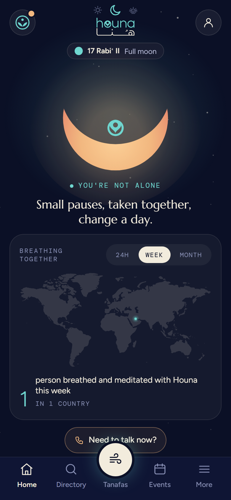
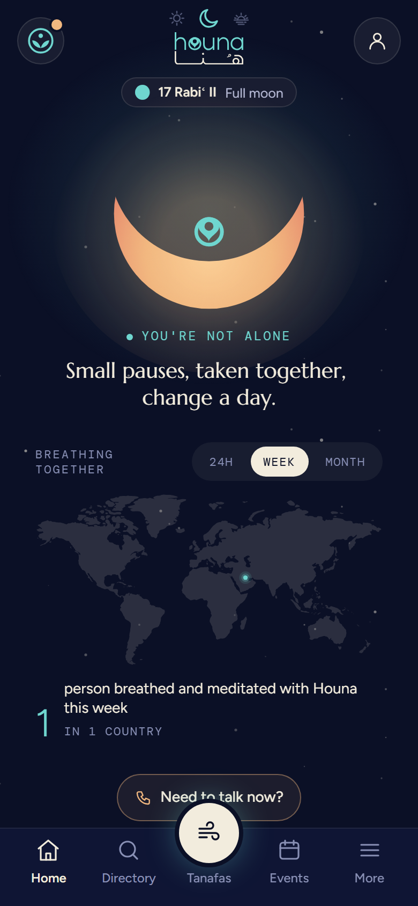
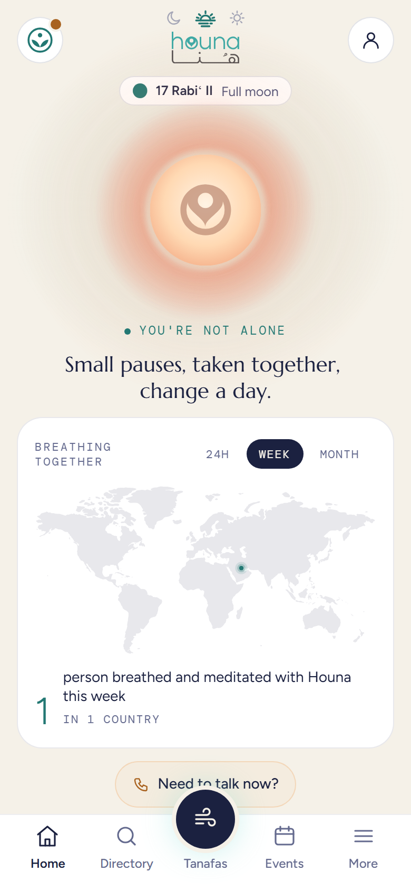
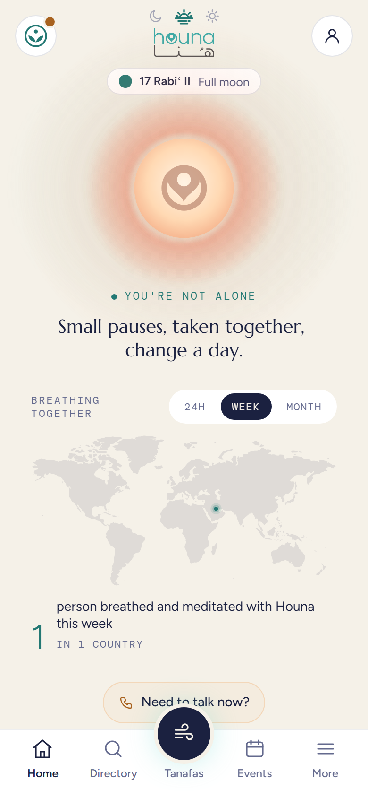
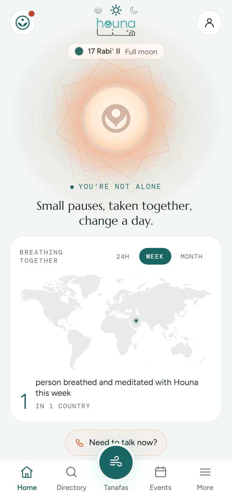
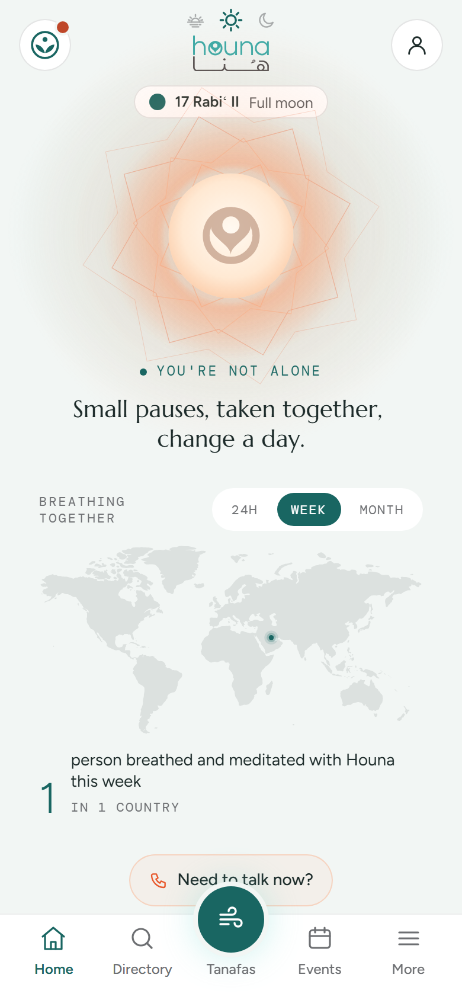

Night, todayThe map in its card.

Night, no cardThe map, chips and count straight on the sky, where the card was: nothing else moves.

Dusk, today

Dusk, no cardThe chips keep their pill, so the choice still reads as a control.

Sunrise, today

Sunrise, no cardLighter: the page reads as one sky, from the sun down to the count.